ネブラリス（Nebralis）
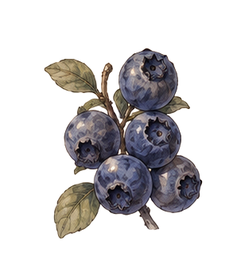
- 視力補助（夜目強化）暗闇での視認性が少し向上。
- 集中力の向上・長時間の作業・魔法詠唱の安定
- 魔力回復（微量）マナポーションほどではないが、じわっと回復。
貴族や上級冒険者にも流通
やや酸味があり、優しい甘酸っぱさ
ラズリス（Razlis）
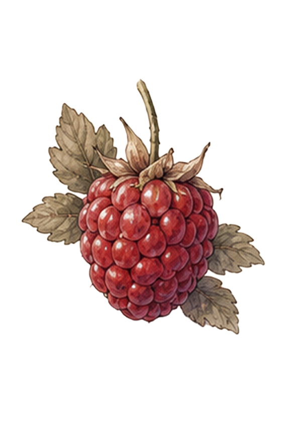
- 感覚強化（知覚向上）敵の気配や周囲の変化に敏感になる。
- 反応速度の向上・瞬間的な判断力や回避行動がわずかに向上。
- 興奮作用（微弱）戦闘時の集中力を高めるが、持続時間は短い。
冒険者や斥候（スカウト）、前衛職に好まれる
酸味がやや強く、後味にほんのりとした甘さが残る
フレリス（Frelis）
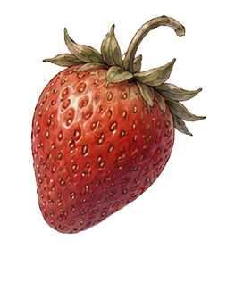
- 体力回復（微量）疲労を和らげ、軽い活力を与える。
- 精神安定・不安や緊張をやわらげ、心を落ち着かせる。
- 味覚高揚・食事の満足感を高め、継続的な食欲を促進。
一般家庭から冒険者まで幅広く流通
甘みが強く、わずかな酸味が全体を引き締める親しみやすい味
ジュネリス（Junelis）
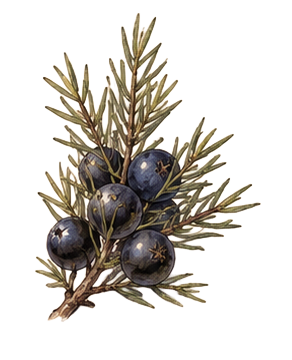
- 解毒作用（微弱）軽度の毒や体内の不純物を和らげる。
- 消化促進・胃の働きを整え、食後の不快感を軽減する。
- 精神安定（緩やか）気持ちを落ち着かせ、冷静な判断を促す。
薬師や料理人、長距離移動を行う商人に好まれる
爽やかな香りとわずかな苦味、後味にスパイスのような余韻が残る
ブラクリス（Braclis）
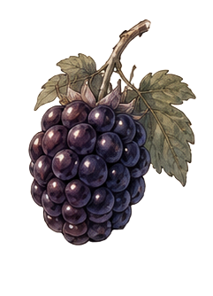
- 持久力向上（緩やか）長時間の行動時の疲労を軽減する。
- 軽度の防御強化・身体の耐久力がわずかに向上する。
- 血流促進・体の巡りを良くし、回復効率を底上げする。
長距離移動や持久戦を行う冒険者、傭兵に好まれる
甘みは控えめでコクが強く、わずかな渋みと酸味が後味に残る
クランリス（Cranlis）
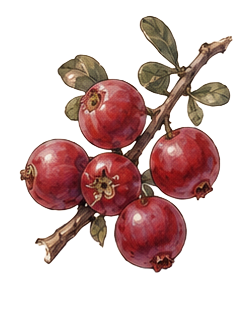
- 浄化作用（微弱）体内の不要な老廃物や毒素の排出を促す。
- 抗菌作用・軽度の感染や体調不良の予防に役立つ。
- 集中維持・長時間の行動中でも意識のクリアさを保つ。
旅人や回復役、長期行動を行う冒険者に好まれる
強めの酸味が特徴で、さっぱりとした後味が口に残る
ノクシア（Noxia）
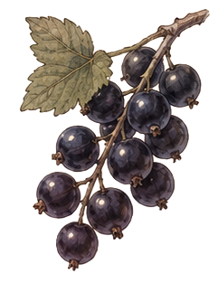
- 視力補助（強め）目の疲労を軽減し、視界の鮮明さを高める。
- 魔力回復（微量＋）じわじわと魔力を回復させる持続型。
- 集中力強化・思考の安定と持続的な集中をサポートする。
魔術師や研究者、長時間作業を行う者に好まれる
酸味が強く、濃厚で引き締まった味わい
カルヴァ（Calva）
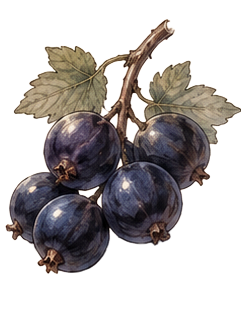
- 視力補助（中程度）視界を安定させ、軽度の視認性向上。
- 魔力回復（微量）穏やかに魔力を回復させる。
- 精神安定・緊張をやわらげ、安定した状態を保つ。
一般冒険者や日常的な摂取に向く扱いやすい果実
甘みがやや強く、まろやかなコクと軽い酸味
ルヴェナ（Ruvena）
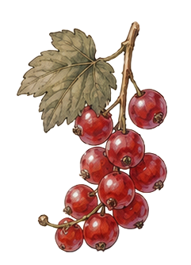
- 血流促進（微弱）身体の巡りを良くし、行動時のパフォーマンスを高める。
- 感覚活性・五感がわずかに鋭くなり、反応が軽やかになる。
- 軽度の疲労回復・溜まった疲れを押し流すように和らげる。
前衛職や軽戦士、素早さを重視する冒険者に好まれる
強めの酸味と爽やかな刺激が特徴で、後味はすっきりしている
グスリス（Guslis）
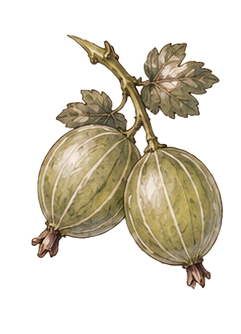
- 自然回復促進（微弱）体の自己回復力を高め、傷や疲労の回復を早める。
- 耐性強化（軽度）環境変化や軽度の毒に対する耐性を付与。
- 体内調整・身体バランスを整え、過度な負荷を軽減する。
レンジャーや採取者、野外活動を行う者に好まれる
酸味が強く、青さの残る荒々しい風味
スグラン（Suglan）
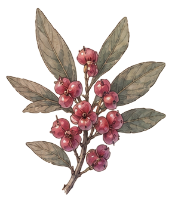
- 嗅覚刺激（微弱）意識をわずかに覚醒させ、感覚を研ぎ澄ます。
- 精神安定（軽度）香りにより緊張や不安を和らげる。
- 集中補助・香気によって思考のまとまりを助ける。
果実としての栄養価は非常に低く、食用にはあまり向かない
強い芳香を持ち、主に香水や香油の原料として利用される
加工することで香りがより引き立ち、高級品として扱われる
やや酸味はあるが、香りの強さが際立ち味の印象は薄い
ソーンリス（Thornlis）
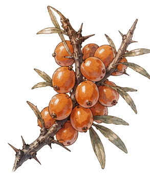
- 体力回復促進（中程度）疲労回復を早め、持久力の維持を助ける。
- 抗酸化作用（強め）身体の損傷や劣化を抑え、回復効率を高める。
- 免疫強化・病や環境ストレスへの耐性を向上させる。
極めて栄養価が高く、“生命力の果実”と呼ばれることもある
トゲの多い低木に実り、採取には危険を伴う
強い酸味とわずかな苦味、濃厚で野性味のある風味
シャドーリス（Shadolis）
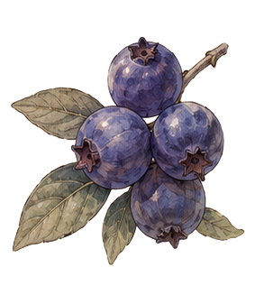
- 体力回復（微弱）自然な甘みにより、疲労を穏やかに回復する。
- 精神安定・安心感を与え、緊張を和らげる。
- 持続回復補助・他の回復効果を緩やかに底上げする。
寒冷地でのみ採集可能な希少な果実
甘くクセがほとんど無く、生食に最も適している
加工にも優れ、パイやジャムの原料として広く利用される
やさしい甘みが広がり、後味はすっきりしている
クロミノカグラ（Kuromino Kagura）
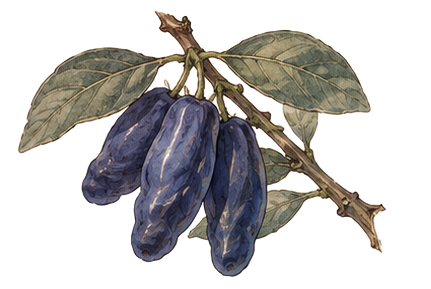
- 体力回復促進（強）摂取後、持続的に体力の回復を促す。
- 栄養補給（極めて高い）果実の中でも最多クラスの栄養を含有する。
- 耐久力向上・身体の基礎能力を底上げし、長時間の行動を支える。
各地に自生するが、光条件や環境競合に弱く、分布は断続的
発見は容易ではなく、採取には知識と経験が求められる
酸味と苦味が非常に強く、生食にはあまり向かない
加工することで価値が引き出され、高級保存食や薬用素材として扱われる